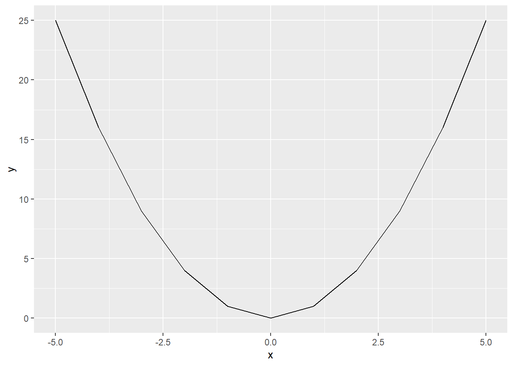
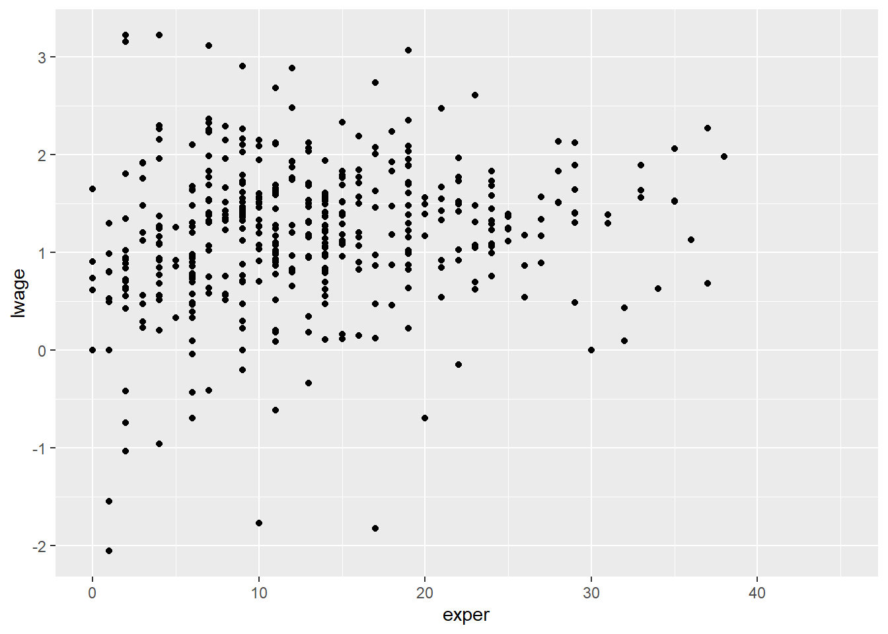
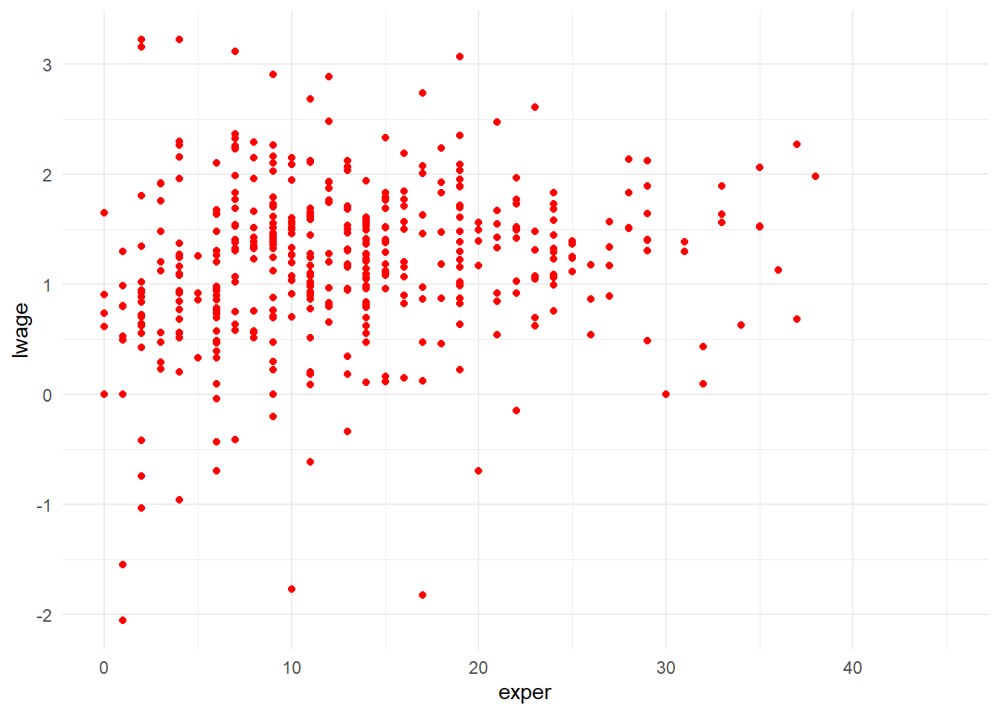
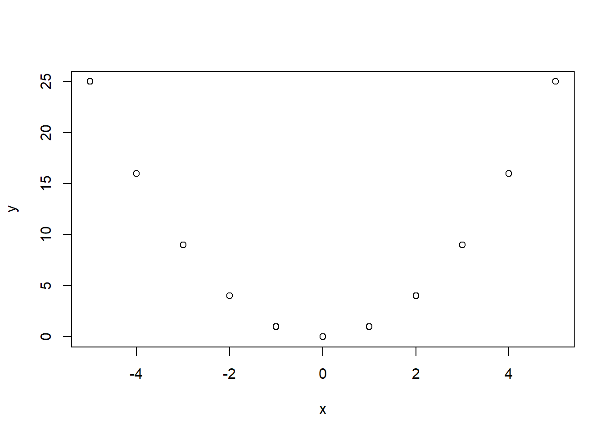

An Introduction to R
Preliminaries
We will assume that when you are reading this you have downloaded R and have been able to access R in some way. This may be via the command line, but most likely we imagine you will have some GUI which allows you to see a number of windows including a space for graphical output, a description of the contents of your R Environment (for example any data you have loaded), potentially a place to write your code in R, and, most importantly, a “shell”, or R interface, which looks like the following:
R --no-saveHere, R code can be entered directly following a prompt which is the > symbol at the bottom of the window above. From the moment you open R you are in an R session until the moment you close it, from now on understand a session as this time between you open and close R. The most simple way to execute code in Ris to simply input commands into your R console. So, for example, you could write the following at to the right of the > symbol, and R will evaluate this code:
4 + 4[1] 8As you can see, R has understood the instruction that you want to add 4 plus 4 and show the result, which is evaluated, and output directly below the code in the R console. Later in this chapter we will properly explain these mathematical operations and the different R data types. Beyond evaluating such simple mathematical operations, R has a host of in-built functions which can be invoked at the command line. While we will interact with this in more detail later, a simple example is the following, which you can type in your R console:
getwd()[1] "C:/Users/Usuario/Desktop/Prim_2023/Ayudantias/Investigación/Clarke_MicroeconometriaCausalidad/Ejemplo_QuartoBook"This function which can be understood as “get working directory” will show you the path on your computer where R is currently working. Thus, any files saved will be exported there, and R will search for any thing to import from this directory. If you want to change this directory you must use the function setwd("Path/to/the/directory/you/want/to/use") with the path written between " " or ' ' in order to R understand that is a character, again a topic that will be seen deeper latter. It is important to note that paths should be separated with the slash character: / rather than the backlash \, and this will work on any operating system. Indeed, if you try to set directoris with a backslash, you will see that R returns an error.
Functions is also a topic we are going to see deeper latter. Anyways, until now we have just execute code in the console, but with this unless you watch out for the history, you may loose the code between sessions, so is highly recommended to register your code in R Scripts. What are scripts? Are text files that R understands it like code to execute, all you write in a script R will interpret it as code to execute unless you have the # character to the left. For example if you type in your script

print("Hello World")[1] "Hello World"R will understand that you are giving the instruction to print the character Hello World, but instead if you type
# print("Hello World")R will do nothing because interpret all to the right from the # as plain text and not code with instructions to follow. Note that is said “all to the right from the #”, this implies that it can be used in the same line as code
print("Hello World") # To the left of # code, all to the right, plain text[1] "Hello World"As you can see it executes the instruction to the left from # but ignores all to the right, this plain text is known as comment and is always a good practice in programming to include a few comments in your script explaining in general terms what are you doing. The previous idea helps you when revise old scripts and when share your code work with others.
An introduction to language and data types
Until now we have executed some code in R, some of this code can made internal changes as the setwd function, some of this code show an specific result as print function and other just execute an action and show result as 4 + 4, but just doing and showing it, not storing this result. In order to store the results of your procedures you can define a variable or an object using one of the next symbols: ->, = or <-. Now is shown an example where is asigned a variable named x with different numbers:
x <- 1
x[1] 1x = 2
x[1] 23 -> xWith the use of -> or <- is clearly how R assign the value, but with the use of = you must be cautelous of do it the way name = value, if not, there will be an error:
4 = xError in 4 = x: lado izquierdo de la asignación inválida (do_set)All the way long in your sessions you could see this type of messages, this messages points you different types of details:
- Error: This kind of messages are telling you that something gone wrong and R couldn’t execute the code you type. Usually they include a brief explanation of the error for you to debugging it.
- Warning: This kind of message are telling you that something that may cause you problems occured. R will still execute the code and give the result, but warning you that not everything is in order and may cause inaccurate results o future problems. Some times this messages are something that you can ignore and get your results correctly but some other times it may cause you problem, so you should give a minute to read it, understand it and evaluate if is necessary to fix it.
- Message: This kind of message are only providing information about the execution, R telling something is considered good to know. Not necessary are errors or warnings, sometimes just comunicate of procedures.
Data Types
Now that you know how to store a value in an object and some of the messages you can get, you should know that R has different data types for this objects, some of them are character, numeric, arrays, data frames and lists as an example. Different types of data allows different ways to operate with it, for example characters must be specified between " ", or ' ', otherwise R will understand them as variables names. For example if you want to write Hello World the next try will give you an error:
Hello WorldError: <text>:1:7: unexpected symbol
1: Hello World
^In change, the next code understands that is a character:
"Hello World"[1] "Hello World"A function that allows you to know which data type is an object is class, for example if you type class("Hello World") it will return "character"
class("Hello World")[1] "character"As previous, if you don’t input the between " " it will return an error pointing that the object doesn’t exists
class(Hello World)Error: <text>:1:13: unexpected symbol
1: class(Hello World
^Numeric data doesn’t need to be inputted between " " or ' ', in fact if is inputted between " " or ' ', R will understand it as a character instead a number. For example if you type just 2 the output will be a number, instead if you type "2" the output will be printed between " ", pointing that element is a character
2[1] 2"2"[1] "2"You can check also with the class function
class(2)[1] "numeric"class("2")[1] "character"Other option of obecjts are vectors or arrays, this types allows to create objectis with multiple elements and an easy way to create them is with the function c, that stands for combine. For example if you want to produce an object with two elements if you just type them without the c function will be an error
1 2
1,2Error: <text>:1:3: unexpected numeric constant
1: 1 2
^Instead, if you use the c function it will create an object with multiple elements
c(1,2)[1] 1 2A precaution is how you mix other data types in the objects that combine different elements because different data types will influence the way this combination works. For example vectors will coerce to the most restrictive data type, if you mix characters with numbers in a vector, R will coerce the vector type to a character
class(c(1,2))[1] "numeric"class(c(1,"2"))[1] "character"You can also create arrays with the matrix function, this allows you to get objects in two dimensiones, rows and columns
matrix(c(1,2,3,4), nrow = 2) [,1] [,2]
[1,] 1 3
[2,] 2 4An inconvenient from arrays is that, as vectors do, coerce to the more restrictive data type
matrix(c(1,2,3,"4"), nrow = 2) [,1] [,2]
[1,] "1" "3"
[2,] "2" "4" One of the data types that works along with mutliple othe types are data frames, this allows to create a standard data base as you tipically know with multiple rows and columns, where an entire column will coerce to the most restrictive data type but you can have different data types in different columns. As an example we create a data frame named df that will use later in other examples
df <- data.frame(A = c(1, 2, 3), B = c(4, 5, 6),
C = c("XXX", "YYY", "ZZZ"))
df A B C
1 1 4 XXX
2 2 5 YYY
3 3 6 ZZZLater we will introduce a data type named tibble that is very similar to data frames, with a few differences, and is common to work with it in the tidyverse that will be explained later. The last data type of this section will be lists, this one allows to store any data type you imagine, you can combine in one object characters, numbers or data frame, within other objects, and is that the reason multiple functions that will explore later will return it results as a list or an object created from a list. An example of this lists are the next one, where we create an object named l that is a list we will use later in other examples.
l <- list(Character = c("Hello", "World"), Number = c(1, 2, 3, 4),
DataFrame = df)Subset Multidimensional Elements
As you see previously, there is elements as data frames or lists that stores multiple elements. Sometimes you will want to work with a subset of this multidimensional data types instead the entire object. In data frames, or lists, you can easily access to an entire column, or object, by using $ followed by the column, or object, name:
df$A[1] 1 2 3l$Character[1] "Hello" "World"But sometimes you may want to access more, or less, than one entire column or object, so the more generally way to access to the elements are with the use of [ ]. One dimension objects like vectors or a column of a data frame, allows to access its elements by using the number of the element position between [ ]
df$A[1][1] 1This syntax allows also to access more than one object by combining it with a vector
df$A[c(1, 3)][1] 1 3In case of multidimensional elements as an entire data frame or arrays you should use [row,column] syntax, if you want an entire row just left in blank the row position
df[,1][1] 1 2 3And the same for an entire row
df[1,] A B C
1 1 4 XXXYou can also mix a single element and more than one row, or column
df[2,2][1] 5df[c(1,3), 2][1] 4 6In lists you must use a slight syntax, first you must access the object with double [ ] and then once you access the object it works like the object do. For example, now we show how to access the data frame that is the third object of the list, and then the element of the second row and second column
l[[3]][2,2][1] 5Between [ ] you can also use the elements names when calling an object inside a list of a column in a data frame. The next code replicates the previous example
l[["DataFrame"]][2,"B"][1] 5Basic Operations
Now that you know how to store data, and the different objects where you can store the data, you must know the basic operations to do with that data. R has the next basic mathematical operations:
| Symbol | Operation |
|---|---|
+ |
Addition |
- |
Subtraction |
* |
Multiplication |
/ |
Division |
** or ^ |
Power |
%% |
Modulus |
%/% |
Integer Division |
A few examples
10 + 3[1] 1310 - 3[1] 710 * 3[1] 3010 / 3[1] 3.33333310 ^ 3[1] 100010 ** 3[1] 100010 %% 3[1] 110 %/% 3[1] 3Also when you combine different operators it respect the PEMDAS order, first solve Parenthesis, second solve Exponents, third Multiplication, fourth Division, fifth Addition and sixth Substraction. For example in order to solve \[-\frac{5 + 3^{5-3}}{5\times 3}\] You should use the code
-(5+3^(5-3))/(5*3)[1] -0.9333333R also has logical operatos that returns a boolean value (TRUE or FALSE, also abbreviated as T or F) pointing if the statement is true or false. This operators are:
| Symbol | Comparison |
|---|---|
== |
Equals |
!= |
Difference |
> |
Greater |
>= |
Greater or Equal |
< |
Less than |
<= |
Less than or Equal |
%in% |
If it is in |
| |
Or |
& |
And |
A few examples
4 == 3[1] FALSE4 != 3[1] TRUE4 > 3[1] TRUE4 >= 3[1] TRUE4 < 3[1] FALSE4 <= 3[1] FALSE4 %in% c(1,2,3,4)[1] TRUETRUE | FALSE[1] TRUETRUE & FALSE[1] FALSEThis boolean values are interpreted by R as the numbers 0 for F and 1 for T, characteristic that allows to work with them numerically and is useful when you want to check a series of conditions.
The logical and mathematical operators are useful when making operations between different objects, it can be an object of a single valur or an object with multiple values. As many software R came with some basic functions that make specific tasks, for example if you want to add all the values in a vector you don´t need to type one-by-one all those values, you can use the function sum:
sum(df$A)[1] 6In order to use this functions the syntaxis in R is the function’s name followed by parenthesis ( ) and between the parenthesis the function’s arguments separated by comma ,. To know better how a function works is always a good idea to read the help document that comes along with R, some that you can make with ? symbol. For an example if you type ?sum you will see how sum function works and its arguments, where you can see an argument na.rm = FALSE, this points that the default value of the argument is FALSE and if you keep reading a little forward you can see that the documentation indicates for this argument: logical. Should missing values (including NaN) be removed? telling you the type of value that you can use and what is the functionality. Let x be a vector with a missing value NA
x <- c(1, 2, NA)If you use the sum function you will get an NA value
sum(x)[1] NABut if you use the na.rm argument you will get the sum of the valid values
sum(x, na.rm = TRUE)[1] 3As the sum function, R comes with a lot of functions in their base environment as functions to get descriptive statistics, work with dates and others. This functions are sufficient to take along any task manually but not necesarilly optimally. There are very useful functions and data types that doesn’t come with base enviroment and comes with packages.
Managing packages
What are packages? Packages is a group of functions and data types that works within them and other functions in R, this packages contains data types definitions, variables definitions and functions that realize some specific procedures. In order to install a package you have several alternatives depending on what is the package’s source, but no matter the option is the case, the procedure must be done only once in your R enviroment. Now is explained how to do it from CRAN by using the function install.packages() writing within " " the package name. As an example, in order to install dplyr -that is one of the most famous R’s packages for data manipulation- you must execute the following code:
install.packages("dplyr")Now that the package is installed you doesn’t need to install it again unless you want to update the package. That a package is installed doesn’t mean that R automatically loads the package along with their functions and data types, for example if you want to use the dplyr’s function mutate to create a new variable in your data frame it will be an error if you haven’t load the dplyr package:
mutate(df, C = A + B)Error in mutate(df, C = A + B): no se pudo encontrar la función "mutate"So in order to use the package you must load it each time you open a new session with the function library() writing the package’s name within " " as follows
library(dplyr)
Attaching package: 'dplyr'The following objects are masked from 'package:stats':
filter, lagThe following objects are masked from 'package:base':
intersect, setdiff, setequal, unionNow if you want to use the dplyr’s function mutate it will work
mutate(df, C = A + B) A B C
1 1 4 5
2 2 5 7
3 3 6 9Is highly recommended that the load of the package be included in your script for reproducibility of your code.
A situation that you may encounter in your R work is that sometimes you may want to use two packages that have different functions with the same name. As an example if you see the message that R print when you loaded dplyr package this says “The following objects are masked from ‘package:stats’:” and next it points the functions filter and lag, this message means that the package stats -one of the automatically installed and loaded by R- also has functions with the names filter and lag, but when you use them R will use the dplyr’s functions. For example the next code use dplyr’s lag
lag(df$A)[1] NA 1 2But in order to use the masked functions you can use the syntaxis package::function, following the previous example, to use stats’s lag
stats::lag(df$A)[1] 1 2 3
attr(,"tsp")
[1] 0 2 1Loading and viewing data
In this section we review how to import classical data formats as csv, txt, excel and dta. The first doesn’t need specific packages to work well, but the latters do.
For csv and txt data R comes with the functions read.csv, read.csv2, read.delim and read.delim2. If you see the help documentation you will see that the four of them belongs to the family of the read.table function and has a very similar usage, being the basic usage:
read.table(file = "Path/To/Your/File.csv")Note that the example is made with csv but is the same for txt. If you explore the help documentation you will notice that you can specify a variety of arguments that indicates if the first row should be taken as a header row, what is the separation between columns, the decimal separator and others.
For excel files you count with a variety of packages such as readxl, openxlsx and xlsx. Each package has their function and allows different tasks as read or write depending on the package. As this section is focused on import data, we present an example of the readxl package’s family of functions read_xls, read_xlsx and read_excel
read_xlsx(path = "Path/To/Your/File.xlsx")If you see the help documentation you will catch that there are a variety of arguments that allows point an specific sheet to impor, an specific range, use or not the first row as column names, between others.
Finally in order to import dta files the package will be haven and the functions read_stata or read_dta, both with the basic usage as follows
read_dta(file = "Path/To/Your/File.dta")Until now all examples only import data but not store it in any object, an action that doesn’t make much sense because probably you import data to work with it. Now we are going to import an internal dataset from the package wooldridge, that contains 115 data sets from the book “Introductory Econometrics: A Modern Approach”, 7th Edition by Jeffrey Wooldridge, in order to show how manipulate this data sets
mroz <- wooldridge::mrozThis dataset contains the data from T. A. Mroz (1987), “The Sensitivity of and Empirical Model of Married Women´s Hours of Work to Economic and Statistical Assumptions”, Econometrica 55, 765-799.
Tyding data
In this section we are covering how to manipulate data, specifically how to make a simple exploratory analysis and modify the data frame. Note that the dataset is imported as a data frame
class(mroz)[1] "data.frame"Along with this section you will see the use of the head function, this function shows us the first rows of an object in order to prevent a data frame being totally printed. Previously we mentioned the existence of tibbles that are a widely used structure similar to data frames but with a few differences like don’t consider rownames or don’t interpret strings as factors by default. We introduce this because with the use of some functions from dplyr package a data frame becomes automatically a tibble. For example, consider de mroz data frame, if we apply the combination of group_by and summarise functions to get the mean of the number of kids with less than 6 years by labor situation of the women:
ungroup(summarise(group_by(mroz, inlf), meankidslt6 = mean(kidslt6)))# A tibble: 2 × 2
inlf meankidslt6
<int> <dbl>
1 0 0.366
2 1 0.140As you can see the result is a tibble. Now that you have an example of the use of dplyr you can see how easily is to get confused by using too many functions at once, a really nice operator that comes with dplyr is the pipe operator %>% that allows to apply functions without writing all together. As an example the next code replicates the previous example:
mroz %>% group_by(inlf) %>% summarise(meankidslt6 = mean(kidslt6)) %>%
ungroup()# A tibble: 2 × 2
inlf meankidslt6
<int> <dbl>
1 0 0.366
2 1 0.140Note that this works as: to the object at the left of the pipe operator, apply the function to the right. Another thing you can note is the use of the group_by, summarise and ungroup combo, where group_by as the name says allows to group by the variable(s) indicated, summarise calculate a descriptive statistic that can be mean, sd, min, max, median, quantile and others, in order to know them all you should consult the help documentation of summarise function.
Other functionalities of dplyr package are the use of sql functions like sql_join that allows to merge two data frames or tibbles, apply functions to every column or specific ones, among others. Another famous package for data manipulation is tidyverse, a package that comes along with other package as dplyr, tibble, tidyr and others like ggplot2 for plots, lubridate for dates, stringr for strings. This fact became tidyverse as one of the must have package for data manipulation but with the caution that it takes up more memory.
library(tidyverse)── Attaching core tidyverse packages ──────────────────────── tidyverse 2.0.0 ──
✔ forcats 1.0.0 ✔ readr 2.1.4
✔ ggplot2 3.4.1 ✔ stringr 1.5.0
✔ lubridate 1.9.2 ✔ tibble 3.2.1
✔ purrr 1.0.1 ✔ tidyr 1.3.0
── Conflicts ────────────────────────────────────────── tidyverse_conflicts() ──
✖ dplyr::filter() masks stats::filter()
✖ dplyr::lag() masks stats::lag()
ℹ Use the conflicted package (<http://conflicted.r-lib.org/>) to force all conflicts to become errorsOnce loaded tidyverse package, you can use all the tools in the packages that are loaded with tidyverse. So let’s now try to make a join between two data frames (tibbles), first create the mean as previous examples and next join this mean to the mroz dataset by the column inlf
mroz %>% group_by(inlf) %>% summarise(MeanKidslt6 = mean(kidslt6)) %>%
ungroup() %>% right_join(mroz, by = "inlf")# A tibble: 753 × 23
inlf MeanKidslt6 hours kidslt6 kidsge6 age educ wage repwage hushrs
<int> <dbl> <int> <int> <int> <int> <int> <dbl> <dbl> <int>
1 0 0.366 0 0 1 49 12 NA 0 2550
2 0 0.366 0 2 0 30 16 NA 0 1928
3 0 0.366 0 1 0 30 12 NA 0 1100
4 0 0.366 0 0 4 41 12 NA 0 3193
5 0 0.366 0 0 1 45 12 NA 0 2250
6 0 0.366 0 0 5 43 12 NA 0 2012
7 0 0.366 0 0 1 42 13 NA 0 3856
8 0 0.366 0 0 0 60 12 NA 0 1645
9 0 0.366 0 0 0 57 12 NA 0 1554
10 0 0.366 0 0 2 38 10 NA 0 2352
# ℹ 743 more rows
# ℹ 13 more variables: husage <int>, huseduc <int>, huswage <dbl>,
# faminc <dbl>, mtr <dbl>, motheduc <int>, fatheduc <int>, unem <dbl>,
# city <int>, exper <int>, nwifeinc <dbl>, lwage <dbl>, expersq <int>Note that the result of this procedure hasn’t been store in any object, so it can’t be accessed later. Other convenient tools that you will apply on this book are selecting some rows or some columns from the dataset, from filter function we can filter rows that meet certain condition and from the use of select we can filter specific columns:
mroz %>% select(kidslt6, hours) %>% filter(kidslt6 > 2) kidslt6 hours
1 3 0
2 3 0
3 3 0In previous section has been shown the use of mutate function to create new variables, in tibbles as in data frames the use of $ operator also creates new variables:
mroz$exper2 <- mroz$exper^2
head(mroz) inlf hours kidslt6 kidsge6 age educ wage repwage hushrs husage huseduc
1 1 1610 1 0 32 12 3.3540 2.65 2708 34 12
2 1 1656 0 2 30 12 1.3889 2.65 2310 30 9
3 1 1980 1 3 35 12 4.5455 4.04 3072 40 12
4 1 456 0 3 34 12 1.0965 3.25 1920 53 10
5 1 1568 1 2 31 14 4.5918 3.60 2000 32 12
6 1 2032 0 0 54 12 4.7421 4.70 1040 57 11
huswage faminc mtr motheduc fatheduc unem city exper nwifeinc lwage
1 4.0288 16310 0.7215 12 7 5.0 0 14 10.910060 1.21015370
2 8.4416 21800 0.6615 7 7 11.0 1 5 19.499981 0.32851210
3 3.5807 21040 0.6915 12 7 5.0 0 15 12.039910 1.51413774
4 3.5417 7300 0.7815 7 7 5.0 0 6 6.799996 0.09212332
5 10.0000 27300 0.6215 12 14 9.5 1 7 20.100058 1.52427220
6 6.7106 19495 0.6915 14 7 7.5 1 33 9.859054 1.55648005
expersq exper2
1 196 196
2 25 25
3 225 225
4 36 36
5 49 49
6 1089 1089Another function to create variables is transmute, but this function doesn’t mantain old variables, in fact it replace all the data for the new one
head(mroz %>% transmute(expersquared = exper^2)) expersquared
1 196
2 25
3 225
4 36
5 49
6 1089So it must be used with caution. Finally the last tool that we introduce for data manipulation is transform data from wide format to long format and reverse. Consider the next data frame
Data <- data.frame(Zone = c("A", "A", "B", "B"),
Year = c(2021, 2022, 2021, 2022),
Sales = c(100, 115, 98, 106))
Data Zone Year Sales
1 A 2021 100
2 A 2022 115
3 B 2021 98
4 B 2022 106This format is the long format, you have multiple observations for one unit (zone in this example), to transform it in wide format
Data = pivot_wider(data = Data, id_cols = Zone, names_from = Year,
values_from = Sales)
Data# A tibble: 2 × 3
Zone `2021` `2022`
<chr> <dbl> <dbl>
1 A 100 115
2 B 98 106As you can see now there is one observation per unit. Lets get it back to long format
Data = pivot_longer(data = Data, names_to = "Year", values_to = "Sales",
cols = -Zone)
Data# A tibble: 4 × 3
Zone Year Sales
<chr> <chr> <dbl>
1 A 2021 100
2 A 2022 115
3 B 2021 98
4 B 2022 106Now that you know the basics of data manipulation, the next step is to learn how make some basic plots.
Basic Plots
The basic function to make a plot in R is the plot function, this function maps pairs of points in the \((x,y)\) coordinate axis. Let \(x\) be a sequence of integers between -5 and 5
x <- -5:5Now consider \(y = x^2\)
y = x^2plot function by default maps a point plot
plot(x,y)
If you access help documentation for plot you can see how add elements to the graph
plot(x,y, type = "l", main = "Plot Example", xlab = "Variable X",
ylab = "Variable Y")
A widely used package for make more custom graphs is ggplot2, as tidyverse has been loaded previous, in this case we don’t need to load ggplot2, but if you haven’t load it remember that with the next code you can do it
library(ggplot2)The first step in ggplot is to define the plot
ggplot()
This define a blank canvas where you can add elements, as an example a line object (geom) is added
ggplot() + geom_line()
Until now we haven’t added data so ggplot2 is not mapping any pair of points, now specify the data, this must be done inside the aes function
ggplot() + geom_line(aes(x = x, y = y))
Note that in order to add elements to the graph we have been using + unlike when using multiple variables where were used the pipe operator %>%. With this syntax you can add more elements to the graph
ggplot() + geom_line(aes(x , y)) + geom_point(aes(x, y))When you use a data frame you can also define aes inside ggplot function
ggplot(mroz, aes(x = exper, y = lwage)) + geom_point()
Here you can manipulate different overall themes for your plot and elements characteristics such as color or size
ggplot(mroz, aes(x = exper, y = lwage)) + geom_point(color = "red") +
theme_minimal()
In this way you can add a variety of elements such as an OLS regression line
ggplot(mroz, aes(x = exper, y = lwage)) + geom_point(color = "red") +
theme_minimal() + geom_smooth(method = "lm", color = "blue")`geom_smooth()` using formula = 'y ~ x'
As said before, this introductory section of this chapter doesn’t intend to be a comprehensive tutorial of R, instead is a wide general guide to understand some fundamentals you will see in the rest of the chapter.